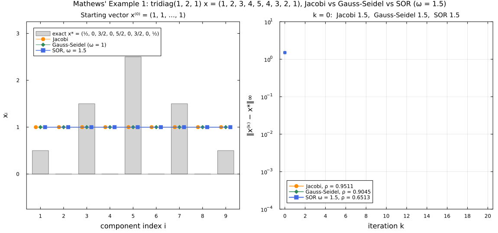
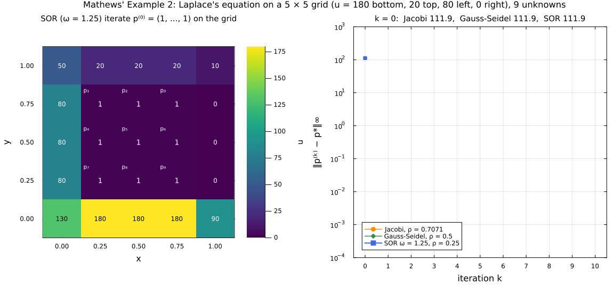

Successive Over Relaxation - SOR
Source inspiration: (Mathew 2000-2019).
Description
Successive over-relaxation (SOR) solves a linear system \(A\mathbf{x}=\mathbf{b}\) by iteration, which pays off for large sparse systems such as those that come from discretized partial differential equations. Write \(A=D-L-U\), with \(D\) the diagonal of \(A\) and \(-L\), \(-U\) its strictly lower and upper parts. Gauss-Seidel iteration sweeps through the equations in order, solving equation \(i\) for \(x_i\) with the newest values of the other unknowns. SOR computes that Gauss-Seidel value and then moves from the old \(x_i\) a factor \(\omega\) of the way to it:
\[ x_i^{(k+1)}=(1-\omega)\,x_i^{(k)}+\frac{\omega}{a_{ii}}\Bigl(b_i-\sum_{j<i}a_{ij}x_j^{(k+1)}-\sum_{j>i}a_{ij}x_j^{(k)}\Bigr),\qquad i=1,\dots,n. \]
With \(\omega=1\) this is Gauss-Seidel; \(\omega>1\) is over-relaxation and \(\omega<1\) under-relaxation. In matrix form one sweep is \(\mathbf{x}^{(k+1)}=T_\omega\mathbf{x}^{(k)}+\mathbf{c}\) with \(T_\omega=(D-\omega L)^{-1}\bigl[(1-\omega)D+\omega U\bigr]\), so the error \(\mathbf{x}^{(k)}-\mathbf{x}_*\) is multiplied by \(T_\omega\) at every sweep and shrinks, in the long run, by about the spectral radius \(\rho(T_\omega)\) per sweep. Kahan’s theorem gives \(\rho(T_\omega)\ge|\omega-1|\), so SOR can converge only for \(0<\omega<2\), and when \(A\) is symmetric positive definite it converges for every \(\omega\) in that interval. For tridiagonal matrices, and more generally for consistently ordered ones such as the five-point Laplace matrix, Young’s theory relates SOR to the Jacobi matrix \(D^{-1}(L+U)\) and its spectral radius \(\rho_J\): when the Jacobi eigenvalues are real and \(\rho_J<1\), Gauss-Seidel has \(\rho(T_1)=\rho_J^2\), and the best parameter is
\[ \omega_{\text{opt}}=\frac{2}{1+\sqrt{1-\rho_J^2}},\qquad \rho(T_{\omega_{\text{opt}}})=\omega_{\text{opt}}-1 . \]
Animations
Each animation below runs one of Mathews’ two examples. Cases 1 and 3 take one sweep per frame and compare SOR with Jacobi and Gauss-Seidel iteration; Case 2 takes one value of \(\omega\) per frame. The errors \(\lVert\mathbf{x}^{(k)}-\mathbf{x}_*\rVert_\infty\) are drawn on a logarithmic axis, where an error multiplied by a fixed ratio at every sweep falls on a straight line, and the legends of Cases 1 and 3 give the spectral radius \(\rho\) of each method’s iteration matrix (in Case 2 the panel titles give \(\rho(\omega)\) for the current \(\omega\)). Cases 1 and 3 iterate in exact rational arithmetic, so every error is exact before it is rounded for display; Case 2 uses double precision, whose rounding errors are far below its tolerance.
All three animations are new. Mathews’ SOR module has no animation, and the archive of his animations has none for iterative methods for linear systems. Example 1 (a) and (b) are both in Case 1 (its frames \(k=10\) and \(k=20\)), and Example 2 with its Laplace-equation aside is Case 3, but Mathews’ comparisons use the Euclidean norm of the error, which is not drawn, his 3-D surface plot of the Laplace solution is replaced by the grid of values, and in Example 2 only the errors of the Jacobi and Gauss-Seidel iterates are shown, not the iterates themselves.
Julia source scripts that generated these animations are linked under each case.
Case 1 — Example 1, Jacobi, Gauss-Seidel and SOR with \(\omega=1.5\), \(\mathbf{x}^{(0)}=(1,\dots,1)\), \(20\) sweeps
Behavior: The left panel draws the nine components of each iterate over grey bars of the exact solution \(\mathbf{x}_*=(\tfrac12,0,\tfrac32,0,\tfrac52,0,\tfrac32,0,\tfrac12)\). The first SOR sweep overshoots: \(x_1^{(1)}=-0.5\) and \(x_8^{(1)}=-0.1427\) are negative, though no component of \(\mathbf{x}_*\) is. After that the SOR iterate settles onto the bars well ahead of the other two; at \(k=10\) it is Mathews’ printed \(P_{10}\) to his six digits. After \(10\) sweeps (Example 1 (a)) the errors are \(0.7080\) for Jacobi, \(0.3796\) for Gauss-Seidel and \(0.02401\) for SOR, and after \(20\) sweeps (Example 1 (b)) they are \(0.4292\), \(0.1381\) and \(3.174\times10^{-4}\). On the log axis the Gauss-Seidel error falls at every sweep, by a ratio that approaches \(\rho(T_1)=\rho_J^2=0.9045\) (\(0.9044\) at \(k=20\)), where \(\rho_J=\cos(\pi/10)=0.9511\). After the first sweep the Jacobi error changes only at the even sweeps \(k=4,6,\dots,20\), so it falls by about \(\rho_J^2\) every two sweeps. The SOR error falls at every sweep except from \(k=8\) to \(k=9\) (\(0.04102\) to \(0.04371\)), and from \(k=10\) to \(k=20\) by an average ratio of \(0.6488\) per sweep, close to \(\rho(T_{1.5})=0.6513\).

Case 2 — Example 1 with \(\omega=0.10,0.15,\dots,1.95\) and \(\omega_{\text{opt}}=1.528\), until \(\lVert\mathbf{x}^{(k)}-\mathbf{x}_*\rVert_\infty<10^{-6}\)
Behavior: Each frame runs SOR on Example 1 from \(\mathbf{x}^{(0)}=(1,\dots,1)\) with one value of \(\omega\) until the error first falls below \(10^{-6}\); the left panel shows its error, with the earlier values of \(\omega\) in grey. The matrix of Example 1 is tridiagonal and symmetric positive definite, with \(\rho_J=\cos(\pi/10)=0.9511\), so SOR converges for every \(\omega\) in \((0,2)\) and \(\omega_{\text{opt}}=2/(1+\sin(\pi/10))=1.528\). The spectral radius \(\rho(T_\omega)\) (top right) falls from \(0.9949\) at \(\omega=0.10\) to \(0.5279\) at \(\omega_{\text{opt}}\), and above \(\omega_{\text{opt}}\) it is exactly \(\omega-1\), a straight line rising to \(0.95\) at \(\omega=1.95\). The number of sweeps (bottom right) follows it: \(2685\) at \(\omega=0.10\), \(138\) at \(\omega=1\) (Gauss-Seidel), \(80\) at \(\omega=1.25\), \(34\) at \(\omega=1.5\), the fewest, \(26\), at \(\omega_{\text{opt}}\), then \(28\) at \(\omega=1.55\) and \(272\) at \(\omega=1.95\). For every \(\omega\le1.45\) in the sweep the error falls at every sweep, and from \(\omega=1.50\) to \(1.60\) it rises at most once. Above \(\omega_{\text{opt}}\) all nine eigenvalues of \(T_\omega\) have modulus \(\omega-1\) and eight of them are complex, and from \(\omega=1.65\) on the error rises at some sweeps, more often as \(\omega\) grows: at \(115\) of the \(272\) sweeps for \(\omega=1.95\).

Case 3 — Example 2, Laplace’s equation on a \(5\times5\) grid, SOR with \(\omega=1.25\) against Jacobi and Gauss-Seidel, \(10\) sweeps
Behavior: Mathews’ \(9\times9\) system of Example 2 is the five-point approximation of \(u_{xx}+u_{yy}=0\) on the unit square with \(u(x,0)=180\), \(u(x,1)=20\), \(u(0,y)=80\) and \(u(1,y)=0\), at the interior points of a grid with spacing \(\tfrac14\): \(p_1,p_2,p_3\) on the row \(y=\tfrac34\), \(p_4,p_5,p_6\) on \(y=\tfrac12\) and \(p_7,p_8,p_9\) on \(y=\tfrac14\), which is the placement that reproduces his right-hand side. The left panel colours the grid by the SOR iterate, with the corners, which no equation uses, set to the average of the two adjacent edges as in Mathews’ remark. After \(10\) sweeps the values agree with Mathews’ printed vector \((55.714, 43.2145, \dots, 84.2858)\) and with the exact solution \(\mathbf{p}_*=(\tfrac{390}{7},\tfrac{605}{14},\tfrac{190}{7},\tfrac{1115}{14},70,\tfrac{635}{14},\tfrac{790}{7},\tfrac{1565}{14},\tfrac{590}{7})\) to within \(2.895\times10^{-4}\), while the Jacobi and Gauss-Seidel errors are \(3.234\) and \(0.1385\). For this grid \(\rho_J=\cos(\pi/4)=0.7071\), and the Gauss-Seidel error is exactly halved at every sweep from \(k=2\) on (\(\rho(T_1)=\rho_J^2=0.5\)), the Jacobi error exactly halved every two sweeps from \(k=1\) on. Mathews’ \(\omega=1.25\) is a little above \(\omega_{\text{opt}}=2/(1+\sin(\pi/4))=1.172\), so all nine eigenvalues of \(T_{1.25}\) have modulus \(\omega-1=0.25\). The SOR error falls at every sweep, but unevenly, by ratios between \(0.054\) and \(0.63\), on average \(0.2763\) per sweep over the ten sweeps.

Residual-Driven Iteration Idea
For \(A\mathbf{x}=\mathbf{b}\), let
\[ \mathbf{r}^{(k)}=\mathbf{b}-A\mathbf{x}^{(k)} \tag{1} \]
be the residual. SOR introduces a relaxation parameter \(\omega\) to accelerate convergence relative to Gauss-Seidel.
With \(A=D-L-U\) and \(0<\omega<2\), SOR is \[ \mathbf{x}^{(k+1)}=(D-\omega L)^{-1}\!\left[(1-\omega)D+\omega U\right]\mathbf{x}^{(k)} +\omega(D-\omega L)^{-1}\mathbf{b}. \tag{2} \] When \(\omega=1\), this reduces to Gauss-Seidel.
Example - 9x9 Tridiagonal System
Solve
\[ \begin{pmatrix} 2&1&0&0&0&0&0&0&0\\ 1&2&1&0&0&0&0&0&0\\ 0&1&2&1&0&0&0&0&0\\ 0&0&1&2&1&0&0&0&0\\ 0&0&0&1&2&1&0&0&0\\ 0&0&0&0&1&2&1&0&0\\ 0&0&0&0&0&1&2&1&0\\ 0&0&0&0&0&0&1&2&1\\ 0&0&0&0&0&0&0&1&2 \end{pmatrix} \mathbf{x} = \begin{pmatrix} 1\\2\\3\\4\\5\\4\\3\\2\\1 \end{pmatrix}, \]
with \(\omega=1.5\) and initial guess
\[ \mathbf{x}^{(0)}=(1,1,\dots,1)^\top. \]
Mathews’ text for this example names \(\omega=1.25\), but his command SORmethod[A, B, P, 1.5, 10] and the SOR iterates he prints use \(\omega=1.5\). This page follows the computation. With \(\omega=1.25\) the error after 10 iterations would be \(\|\mathbf{x}_{10}-\mathbf{x}_*\|_\infty = 0.1887\) instead of the \(0.02401\) below.
For this tridiagonal system, a component form of SOR is
\[ \begin{aligned} x_1^{(k+1)}&=(1-\omega)x_1^{(k)}+\frac{\omega}{2}\left(b_1-x_2^{(k)}\right),\\ x_i^{(k+1)}&=(1-\omega)x_i^{(k)}+\frac{\omega}{2}\left(b_i-x_{i-1}^{(k+1)}-x_{i+1}^{(k)}\right),\quad i=2,\dots,8,\\ x_9^{(k+1)}&=(1-\omega)x_9^{(k)}+\frac{\omega}{2}\left(b_9-x_8^{(k+1)}\right). \end{aligned} \]
Step 1: First SOR sweep (from \(\mathbf{x}^{(0)}\)) begins with
\[ \begin{aligned} x_1^{(1)}&=(1-1.5)(1)+\tfrac{1.5}{2}(1-1)=-0.5,\\ x_2^{(1)}&=(1-1.5)(1)+\tfrac{1.5}{2}(2-(-0.5)-1)=0.625,\\ x_3^{(1)}&=(1-1.5)(1)+\tfrac{1.5}{2}(3-0.625-1)=0.53125, \end{aligned} \]
and continues similarly through \(x_9^{(1)}\).
After 10 iterations, the module reports these approximations:
\[ \mathbf{x}_{J,10}\approx \begin{pmatrix} 0.353516\\0.439453\\1.10938\\0.708008\\2.01172\\0.708008\\1.10938\\0.439453\\0.353516 \end{pmatrix}, \]
\[ \mathbf{x}_{GS,10}\approx \begin{pmatrix} 0.352474\\0.264427\\1.15727\\0.379622\\2.12333\\0.338747\\1.22693\\0.188383\\0.405809 \end{pmatrix}, \]
\[ \mathbf{x}_{SOR,10}\approx \begin{pmatrix} 0.48649\\0.0225178\\1.47599\\0.0220403\\2.48109\\0.0143284\\1.49083\\0.0066904\\0.497745 \end{pmatrix}. \]
The exact solution is
\[ \mathbf{x}_*=\left(\tfrac12,0,\tfrac32,0,\tfrac52,0,\tfrac32,0,\tfrac12\right)^\top. \]
Verification:
| Row | Left-hand side | Right-hand side |
|---|---|---|
| 1 | \(2(\tfrac12)+0=1\) | \(1\;\checkmark\) |
| 2 | \(\tfrac12+2(0)+\tfrac32=2\) | \(2\;\checkmark\) |
| 3 | \(0+2(\tfrac32)+0=3\) | \(3\;\checkmark\) |
| 4 | \(\tfrac32+2(0)+\tfrac52=4\) | \(4\;\checkmark\) |
| 5 | \(0+2(\tfrac52)+0=5\) | \(5\;\checkmark\) |
| 6 | \(\tfrac52+2(0)+\tfrac32=4\) | \(4\;\checkmark\) |
| 7 | \(0+2(\tfrac32)+0=3\) | \(3\;\checkmark\) |
| 8 | \(\tfrac32+2(0)+\tfrac12=2\) | \(2\;\checkmark\) |
| 9 | \(0+2(\tfrac12)=1\) | \(1\;\checkmark\) |
Using the infinity norm error \(\|\mathbf{x}_{10}-\mathbf{x}_*\|_\infty\) from those vectors:
| Method | Error after 10 iterations |
|---|---|
| Jacobi | \(0.708008\) |
| Gauss-Seidel | \(0.379622\) |
| SOR (\(\omega=1.5\)) | \(0.02401\) |
SOR is much closer to the exact solution after the same iteration count in this example.